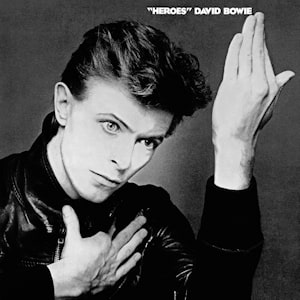
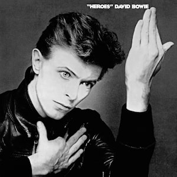

Before you read any further, I should warn you that this is a really long read. I know some of my other posts are long, but this one probably takes the cake, I absolutely adore both of these albums, and I have a LOT to say about them.
Perhaps you're confused, you clicked on one of the two albums and got both. If you're coming from the Bowie Worst to Best, you may be wondering which one I think is better.
Well that's by design, because I believe these albums are inseparable, and must be discussed together, as they are pieces of a larger puzzle. I tend to think of these as companion albums, almost completely opposite in approach. Where Low sees Bowie using warmer sounds (and artwork) and focusing on textures, particularly in the instrumental half, “Heroes” sees Bowie emphasizing and rigidity, whether that be through the emotive, at times erratic vocal performances, or the focus on individual sounds and contrasts in the instrumental halves. The differences can be explained entirely with the covers, and the context of where Bowie seems to be in his life at the time of recording. Low sees Bowie slowly resigning to his depressive state and melting into the surrounding depression of Berlin, while “Heroes” sees him clawing his way out of the walls he (and Berlin) have built up and trying to fight for happiness. The warm, yellow cover of Bowie staring off into the distance beautifully contrasts the black and white cover of Bowie emphasizing angles and rigidity in his posture, and both of these covers are among my all time favorites.
I love these albums to death. Both are in my top 5, both represent different phases of my life beautifully, and I probably listen to both at least once a week, often more. As such, I have developed my own interpretation for both of these albums, and I will go through these interpretations and hopefully express just how meticulously crafted and impressive these albums are. And as I continue, it will also become clear why I labelled these both as #1, they are truly meant to be discussed together. Each surely stands alone, but together, they form a connection that is unparalleled, and paint a vivid picture of how Bowie transformed in 1977.
“Speed of Life”: As much as I want to open up by gushing about how much I love this song, I think it’s best saved for the very end. I will discuss this when I discuss “The Secret Life of Arabia”, and hopefully it will make sense why.
“Breaking Glass”: “Breaking Glass” opens very harshly with its drums and guitar performance, and generally the song just sounds like Bowie breaking the mirror in his room. Bowie is clearly talking to himself here, but the use of the second person is notable, as if to completely separate himself from the image that stares back at him. This is Bowie at his angriest on the album, and the self-hatred and self-deprecation is clear as day here. Bowie has taken a long look at the state of himself and his world, and is fuming, ready to tear everything apart.
“What In The World”: Eventually, Bowie’s anger fades into sadness, but there is still a touch of youthful exuberance and naivety on display here, before he is completely consumed in darkness. “What In The World” makes it clear that there is still a joyful part of him inside that is dying to come out, the young Bowie, the Ziggy Stardust, that is trapped inside the sadness that consumes Bowie.
“Sound and Vision”: This song marks the silence of that young Bowie we just met, beginning the descent in depression that dominates the rest of this album. “Sound and Vision” sees Bowie completely wrapped in blue now, unable to see or anything but his own internal struggles. The instrumental portion that dominates most of this track is beautiful, and forms a nice buildup to the verse that forms the centerpiece of the song. The vocals here when Bowie sings “blue, blue, electric blue/that’s the color of my room” sound like an attempt to climb out of this blue and ascend to happiness, before he ultimately drops back down to a somber tone to complete the lyric, “where I will love”. Aside from this opening moment, Bowie sounds completely defeated, desperate to escape, but seemingly aware of how futile this may prove to be.
“Always Crashing In The Same Car”: This is easily the most fully fleshed out track lyrically, and sees Bowie almost looking at himself in the third person, aimlessly driving in circles, making the same mistakes over and over again. The anger and energy from previous tracks has completely disappeared entirely, and the beautiful vocal performance here illustrates Bowie’s complete descent into depression. There is still clearly frustration that shines through the lyrics, and an urge to escape, but the vocals here make it seem as though Bowie has given up by now. I can’t help but feel defeated myself every time I hear this track, it perfectly captures frustration coupled with helplessness.
“Be My Wife”: This is the final track with lyrics, and it serves as a final cry for help from Bowie. The title says it all, Bowie desperately needs someone to fill his loneliness and lift him from his depression, calling back to the themes echoed across Station to Station. The frantic instrumentation adds a captivating sense of urgency, you feel as if Bowie is doomed to fall to the lowest lows if his final cry for help isn’t answered. And the final lyric (at least, the final fully formed thought, the final lyric is on “Subterraneans”) is so simple, yet carries so much weight with everything that preceded it: “Sometimes it gets so lonely”
And now we move to the electronic section of Low. As we go through this, it’s going to become painfully clear that I don’t have the technical background to discuss electronic songs at all. I’ll try to just discuss the emotions that shine through each track, and how they add to the overall album experience and concept.
“A New Career in a New Town”: While Bowie didn’t quite find the love he was looking for, his life did receive a necessary jolt that may have ultimately saved him. I’m not sure of the history behind how this happened, but somehow, some way, Bowie and Iggy Pop ended up in Berlin with Brian Eno, to escape their previous lives and kick their drug addictions, searching for a resurgence. That’s captured here in this track, which perfectly balances the sadness of the previous tracks with a hopefulness brought on by the move to Berlin.
“Warszawa”: While Berlin did provide the spark Bowie needed to restore and reinvigorate his life, that would not be fully realized (emotionally) until the events on “Heroes”. Throughout Low, Bowie instead is consumed by the sadness and despair of 1970s Berlin, divided by the Berlin Wall. This sadness is captured here with a lengthy ambient track that drones on forebodingly. One of the major elements on this album, that aligns with the chosen album structure, is speech. Even in the first half, with lyrical tracks, they are often incredibly blunt and simple, the emphasis is placed on the instrumentation and emotions evoked through how the vocal performances play off of this instrumentation. The emphasis is always placed on the sound, and the general texture of the song, versus distinct, individual moments. This gets dialed up on the second half, and especially on this track, where Bowie can do nothing but chant to express the desire to escape the burden he feels. The lack of lyrics represents Bowie’s helplessness, and the helplessness of the residents of Berlin, who can’t do anything but drown in Berlin’s sadness.
“Art Decade”: I love the title of this track, assuming it’s a play on the phrase “art decayed”, which aptly describes the track. Like “Warszawa”, this song focuses on the texture that is carried out over its track length to depict the slow decay of Bowie’s inspiration, motivation, and eventually Bowie himself. This track is absolutely stunning, and continues to beautifully paint a vivid image of Bowie slowly, helplessly fading away.
“Weeping Wall”: I’ve spoken a lot about textures thus far, and their importance throughout the album, and especially the instrumental half. This song still creates a beautiful texture, but one of potential hopefulness and youth, capturing moments from “What In The World” with it’s continuous *plinks* in an attempt to escape the sadness dragging Bowie down. But the focus of this song is not this texture, which lives in the background of the track, but on the endless weeping that happens in the foreground. The focus here is on individual moments, unlike preceding tracks, where Bowie lets out wails as yet another cry for help. This is like the “Be My Wife” of this half, only this time, there’s nothing to potentially save Bowie from his eventual fate.
And so we come to “Subterraneans”. In an album full of despair, in an album full of moments to break us down into tears, this stands out as one of the saddest tracks Bowie has ever created. Moments on Blackstar are potentially tear inducing because of their lyrical depictions of a Bowie from heaven, and are coupled with the circumstance of Bowie’s passing. But in terms of a song that could apply more generally to anyone going through depression, I would argue none captures the final moments of that descent more emotionally, and more accurately, than “Subterraneans”. This track takes a similar approach to “Warszawa”, but features almost incomprehensible lyrics towards the end, Bowie’s final words before he melts into the Berlin soil. The only lyrics I can make out for sure here, “share bright failing star”, feel like Bowie’s final attempt to reach out to someone to pull him up. But as the track closes, it’s clear that this, among his many cries for help across the album, are pointless, and Bowie is now 6 feet under, subterranean.
So there’s Low; to summarize my thoughts, I think that Low is the most vivid and potent artistic portrayal of depression. I seriously don’t think there is a better way to present what depression feels like, and every time I listen to this record I find myself melting in the depression of 70s Berlin along with Bowie. To the point where I have to listen to “Heroes” to pull myself out of it, which gets into where “Heroes” falls in this narrative. Low is a relatively straightforward work to understand, there is just this haze of depression that surrounds all of the instrumentation and influences every lyric here, it’s hard to come away from this album without understanding Bowie’s plight. The album has a clear story, but the gradual, linear approach to telling it makes it easy for the listener to grasp and resonate with what’s happening here.
“Heroes” is a different animal altogether, it’s very intricately put together, and there is a huge emphasis on each individual moment here. The narrative here isn’t made as apparent, as many of the vocal tracks are heavily improvised and focus on Bowie’s vocal performances, and the instrumental tracks vary much more than those on Low. Where those focused on using textures to build an atmosphere, here Bowie and Eno use contrast to craft a clear story that demands to be carefully dissected to gather what it’s trying to say. Ultimately, unlike Low, I believe only Bowie truly knows what he wants to say here, and how he wants to say it. But that’s not to say I haven’t taken away a lot from this album, so let’s get into my interpretation of “Heroes”.
I interpret "Heroes" as somewhat of a double album, the four track stretch from "Joe the Lion" to "Blackout" juxtaposes the four track stretch from "V2 Schneider" to "Neukoln", each depicting the same story from a different side of the Berlin Wall. These stories follow approximately the same trajectory, and they share something with Low. This is in fact the only thing they share with Low, and this is crucial to understanding how I have interpreted this album: Bowie still dies in this album, just as he died in "Subterraneans" at the end of Low. We’ll get there, but establishing this is important to highlight the contrast between both albums. It’s all in how Bowie dies, and what his outlook on life is.
“Beauty and the Beast”: The “Heroes” opener picks up where we left off from Low, and we see that Bowie is still alive, as he points out “thank God heaven left us, standing on our feet”. This is the beginning of the upward climb from the lows that the previous album left us in. There are two key things introduced here that hold throughout the rest of the record.
“Beauty and the Beast” opens with a guitar (I believe Fripp’s) screech unlike anything imaginable on Low, and this sets the tone for the rest of the album. Where most of Low, post-”Breaking Glass”, was warm and rich in texture, the instrumentation here feels very calculated and in your face. Bowie makes it clear he’s clawing his way back to the emotional heights he once felt.
The next thing to notice is the title of the track, “Beauty and the Beast”. It’s quickly apparent that dichotomy is a major theme on this record, this plays heavily into the statement that this record makes. The main question that pervades throughout the record is, “Who are the heroes?”, and two distinct dichotomies present an answer to this. The first, which is clear from the conceptual division of this album, is the dichotomy between West Berlin, presented as the wild, frenetic first half, and East Berlin, presented as the foreboding instrumental second half. Neither of these are the answer, and Bowie is not making a statement about his politics here. In fact, as we will discuss with “Joe the Lion” and “V2 Schneider”, he celebrates the culture of both sides, and the influence they’ve had on his music. We’ll get to the second dichotomy at the very end, though it will likely be discussed here and there as it turns up in a few of the tracks on the first half.
“Joe the Lion”/”V2 Schneider”: Both of these tracks are appetizers in a way, introducing you to their respective sides of Berlin, culturally and sonically. “Joe the Lion” presents West Berlin as a fun, wild party essentially, where the town (and the track as a result) is booming with energy. The vocals here are very erratic, and Joe’s identity isn’t super well-defined, besides the fact that he’s charismatic and wants you to nail him to his car. “V2 Schneider” is quite the opposite. In fact, the only thing these two tracks have in common is their place and purpose in the album. “V2 Schneider” uses its horns to portray a happiness and pride across East Berlin that matches the joy and passion of “Joe the Lion”. But the personality here is entirely different, “V2 Schneider” uses drums to create a military-like atmosphere, and in general this track contrasts the spontaneity of the first half with its rigid structure and slow buildup. It’s still quite a celebratory track, and I love how this pays homage to Florian Schneider of Kraftwerk. With these two tracks, Bowie makes it clear that he believes the distinction of who the heroes are doesn’t come down to which side of the wall they lie on. Now that we’ve established that, and introduced the Berlin Wall, let’s get to the next song.
“‘Heroes’”: Where do I start with this song? I could probably open by discussing the vocal performance here, first focusing on the recording technique that Tony Visconti has mentioned in interviews. (Hopefully I don’t mess anything up). Three microphones were used at three distances away from Bowie, and each microphone would only record if a certain threshold was cleared. The first one was right in front of Bowie, this was the normal microphone that always picks up his voice. But as the song progresses, Bowie sings louder and louder to clear the threshold on the further mics, and this technique, along with Bowie’s passion and emotion, makes for arguably the most compelling vocal performance I’ve ever heard. Listening to Bowie wail “I, I will be king!” truly captures him fighting his way back towards happiness, as well as the sentiment of couples separated by the wall, searching for the moment where the wall no longer impedes them, and they are on top of the world. And this is where Bowie paints who the heroes are, they’re people just like us. They’re people who keep pushing forward despite the obstacles in their way, who keep trudging onto new heights without settling, who fight for what they believe in till their very last breath. This is elaborated on in further tracks lyrically, but from the lyrics and vocals here, it’s clear that Bowie aspires to follow the example of those who risk it all for their significant other, who move heaven and earth to achieve what is most important to them.
“Sons of the Silent Age”: This track echoes much of the sentiments from the title track, and takes these a step further to establish the underlying dichotomy and make the argument as to who the heroes are. One of the main themes of Low, that arose from the structure of the album and the blunt, at times erratic lyrics in its first half, is the idea of voice. Bowie’s depression often left him struggling to speak and convey his thoughts clearly, particularly on the second half as he was consumed by the depression of Berlin. Bowie calls back to this idea here, and makes a clear statement. The heroes are the ones who refuse to stay silent, the ones who refuse to just accept the sound that surrounds them, and again, the ones who fight for what they believe in, from their first word to their last. This is perfectly captured in the chorus: “Baby, I won’t ever let you down/I can’t stand another sound/Let’s find another way down”. The last part is especially important, by saying “way down”, Bowie acknowledges that every path eventually leads to the same place: death. Bowie’s argument on this album takes a “the means justify the ends” approach, so long as you fight for what you believe in, you can be happy with the result.
“Blackout”: I absolutely love how frantic this is, it feels very improvised (as does “Joe the Lion”), and I wouldn’t be surprised if it was. “Blackout” sees Bowie depicting, well, a blackout, in this case referring to his life. But compare this to “Subterraneans”, and it’s clear that he’s dying under completely different circumstances. With the vocal performance here, and the lines “Get me off the streets/Get some protection!/Get me on my feet/Get some direction!” make it clear that he’s fighting for his happiness till the very last breath, rather than slowly melting away. Now that we’ve completed Bowie’s West Berlin tale, let’s head over the wall to the East side.
“Sense of Doubt”: The parallel between “Joe the Lion” and “V2 Schneider” was clear, but the tracks afterwards don’t quite match up 1 to 1. I can’t say that “Sense of Doubt” is the “‘Heroes’” of this side, the stories of each side don’t quite line up like that. They do as we approach “Neukoln”, but I’m getting ahead of myself. “Sense of Doubt” is perhaps best explained by contrasting it to “Warszawa” from Low. Both depict the looming oppression that is felt throughout Berlin, but where “Warszawa” emphasizes the feeling of helplessness by drowning the entire track in ambience, while “Sense of Doubt” presents a clear pushback through distinct moments that stand out from the surrounding ambience. The title puts it perfectly, there is a sense of doubt, and this song poses the question: Will you fight back?
“Moss Garden”: “Sense of Doubt” segues right into “Moss Garden”, which takes a more serene, tranquil approach to the themes evoked on the previous track. The *plinks* (sorry, hopefully you know what I mean) provide a clear sense of tension, but throughout most of the track they do nothing but add to the beauty of the surrounding ambience instead. Silence is treated with beauty here, but while that does convey a sense of peace, as the track nears its end, it’s clear that the tension presented is mounting, and that this beauty is fleeting.
“Neukoln”: “Neukoln” begins with several smaller sounds (I really have no idea what to call these) that slowly accumulate and build tension, until they collectively snap and kick the song into gear. The rest of this song parallels “Blackout” well, the horns mirror the unease brought by the frenetic pace and vocals there, and the same image is painted. Bowie is fighting for happiness, fighting for what matters to him, until his last breath. The horns build up towards the end and eventually, one final, prolonged note signals the end. Yet again, Bowie has died, but again, this song starkly contrasts “Subterraneans”. Bowie refuses to melt into his depression, and claws his way out as best he can.
Both albums have a very clear structure, consisting of a side A with vocals and a side B with instrumentals, though these choices serve different purposes on each album. But on each album, there is a track that breaks these rules, and I’ve saved both for last. Since we’re on “Heroes”, and just finished “Neukoln”, let’s discuss “The Secret Life of Arabia”.
“The Secret Life of Arabia” is a very abstract track that doesn’t quite make it’s messages clear like most of the tracks on both of these records do. Instead, it focuses on painting an image of an evergreen, expansive land (Arabia), which I think is referring to heaven, given my interpretation of “Blackout” and “Neukoln”. Now that Bowie has spent his life looking to build himself up and fight for his dearest causes, he finds himself in heaven, able to look back satisfied that he gave it all he got. And this is the happiness he has been seeking, dating back to Station to Station. This track affirms the beliefs presented in previous tracks, despite the fact that Bowie dies in all 3 (including Low) storylines, he has still achieved the inner peace he desires in the latter 2, where he refused to stay silent. Perhaps Bowie didn’t need to go through this album to discover this, and the Berlin stay was more about kicking his drug habits, and these two albums are the byproduct. Or maybe these were therapeutic, potentially educational experiences for Bowie. But personally, this album emphasized the importance of intent, and how this can frame our happiness better than a reliance on the outside world to do so. Manufacturing happiness is difficult, but Bowie has seemingly done so over the course of this album, and “The Secret Life of Arabia” affirms the inner peace that arises as a result. This song is not only the end of “Heroes”, but the end of the 1977 storyline, and the end of an era for Bowie. Bowie has climbed his way out from depression and can move on, at long last.
Now I’ve seemingly forgotten something. I’ve concluded my (quite lengthy and all over the place) synopsis on these albums, and I have yet to discuss “Speed of Life”. I wanted to highlight this line first, from “The Secret Life of Arabia”: “I was running at the speed of life”. I bring this up to show how interconnected these two albums are, and how one is a continuation of the other. And that’s all. In terms of following along with the story, there’s no good reason I should be discussing “Speed of Life” now, and I should honestly just omit this paragraph and add in a quick description above. But I won’t, and that’s entirely for personal reasons. This is my favorite song. Ever.
“Speed of Life”: Imagine something sparkling up high on a shelf, a shelf you can barely reach. You reach as far as you can, stretching your arm out to its farthest limits, elevating higher and higher until there’s no more room on your toenails to support yourself. You’re just about to reach it, the skin of your finger snags a taste of its soft, velvet texture. And then it recedes, and you lose your balance and tumble down to the floor. You’re coaxed to try again, promised that it will be easier this time, that if you keep pushing and pushing and pushing, you can stretch to the highest heights imaginable. And so you extend, you can feel the pain in your toes and you can’t rise as high, but you push nonetheless. And again, for a brief moment, the tips of your fingers graze against its delicate shell, you even begin to feel the friction, as your fingers latch onto it. But you’re strained past your body’s limits, you’re sweating profusely, you can’t tell whether there’s tears or sweat dripping down from your eyes as you push further. And your damp hands slip off and push it away, off the other end of the shelf, never to be found again. Again you come crashing down and resign to your fate. You feel yourself melt into the floor, unable to lift your arms up, unwilling to try. The light slowly fades in the room as the sun sets and you close your eyes, knowing full well you may never muster up the energy or the courage to open them again.
Now imagine all of this emotion, all of this unbearable burden, and all of this exhaustion, packed into every single moment of your existence. That is what I believe “Speed of Life” captures. This is how I believe Bowie perceives the lives of those around him, in regards to how he experiences time. What is simply another moment for most of us, is a dreadful stretch of time filled with anxiety, false promise, and eventual anguish and despair. In a sense, this is the opposite of “Station to Station”. Where that saw a coked up Bowie racing from moment to moment not experiencing anything, “Speed of Life” takes a different approach in presenting the same struggle. Now Bowie, sober, is forced to come to terms with the life he’s built for himself, and each moment is filled with thousands of personal reflections, thousands of conversations in his head, each one piling on more weight.
“Speed of Life” opens with whining guitars, emulating the cries heard on “Weeping Wall”, which carry throughout the entire track. The song begins as if it had been going on for a while previously, showing the permanence of his depression, and the impact it has had on him. There are two moments where the guitars swell to reach a peak that sounds optimistic, dare I say happy. But as Bowie tries to desperately hold on, these crumble and leave the track back where it started, wailing away aimlessly until the next peak. The track eventually dies out, and Bowie’s life is over in a flash.
I’ve always thought of this song as a summary of the album that follows, as it introduces Bowie’s depression beautifully and incorporates much of what’s to come instrumentally, before fading out and making way for the rest of the album. The rest of the album dives further into Bowie’s descent, but this song captures his depression just as effectively as any song possible could. And most notably, one of Bowie’s most iconic traits, his vocal prowess, is absent here. This is one moment of Bowie’s life, isolated and expanded, where Bowie finds himself helpless and lost, desperately reaching for anything to pull him out, unable to call for help. I’ve personally never heard a more beautiful song.
And there it is, Low and “Heroes”, two of the greatest albums ever made. Together, these albums form the one of the most emotionally powerful and intellectually captivating artistic statements ever, and paint a beautiful blueprint for deconstructing depression and constructing happiness.